Introduction
This is the fourth part of JoJo's Bizarre Adventure! This series was published in the Weekly Shonen Jump from May 1992 all the way to December 1995. In 2016 the part recieve an adaption!
How did everyone get Stands in Morioh?
The mystery arrow ended up in Morioh the year of 1999 which Stand abilities travel throughout the town!
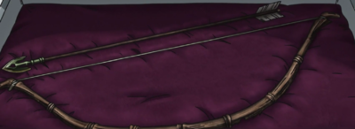Who is the next Joestar?
In this part we will follow the adventure of the next Joestar who is the illegitimate son of Joseph Joestar! His name is Josuke Higashikata. He is kind-hearted and protective indiviual with a strong sense of justice. He is generally friendly and caring! His willingness to help others and takes pride in Morioh, his determination to keep it safe from supernatural threats posed as Stand users! I would say his personality is a mix of toughness, kindness, and a strong sense of justice but don't ever insult his hairstyle! You will see many familiar faces also!
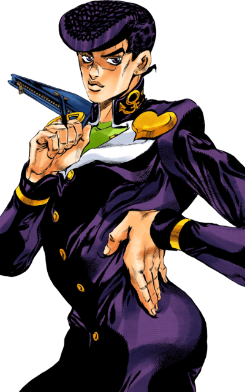Plot
Diamond is Unbreakable follows Josuke Higashikata, as he navigates the bizarre occurences in his hometown Morioh! The main antagonist in this part is a serial killer who is named Yoshikage Kira who has a stand named Killer Queen.
Josuke Higashikata alongside with his friends discovered their town is plagued with Stand users and some who are allies while others are enemies. The main goal of the series is to found out who is serial killer and stop him before he kills even more people!
Major Characters
Josuke Higashikata
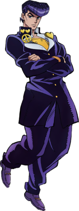Koichi Hirose
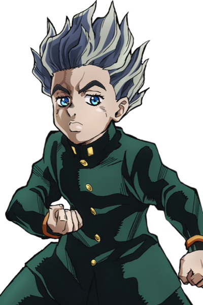Okuyasu Nijimura
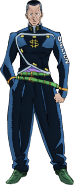Rohan Kishibe
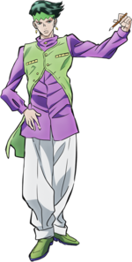Jotaro Kujo
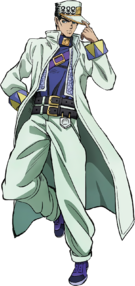Joseph Joestar
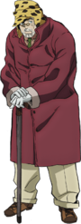Yoshikage Kira
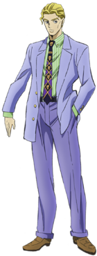References
Akira Otoishi Weekly Shonen Jump Issue #17
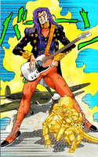TBA 1980 M:Kenji Ohtsuki
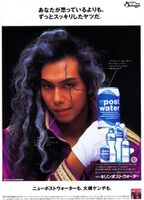Jump Comics Volume 42 (Cover) May 11, 1995

Gianni Versace Fall/Winter 1984 M: John Hanrahan Ph: Bruce Weber

Stands
The stands of everyone will remain a secret!